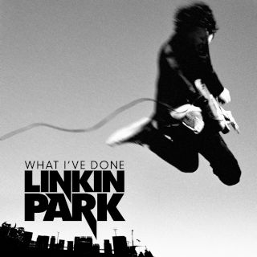

In this farewell
There's no blood, there's no alibi
'Cause I've drawn regret
From the truth of a thousand lies
So let mercy come and wash away
What I've done
I'll face myself
To cross out what I've become
Erase myself
And let go of what I've done
Put to rest
What you thought of me
While I clean this slate
With the hands of uncertainty
So let mercy come and wash away
What I've done
I'll face myself
To cross out what I've become
Erase myself
And let go of what I've done
For what I've done
I start again
And whatever pain may come
Today this ends
I'm forgiving what I've done
What I've done
I'll face myself
To cross out what I've become
Erase myself
And let go of what I've done
(Na-na, na, na, na-na, na, na)
(Na-na, na, na, na-na, na, na)
What I've done
(Na-na, na, na, na-na, na, na)
(Na-na, na, na, na-na, na, na)
Forgiving what I've done
(Na-na, na, na, na-na, na, na)
(Na-na, na, na, na-na, na, na)